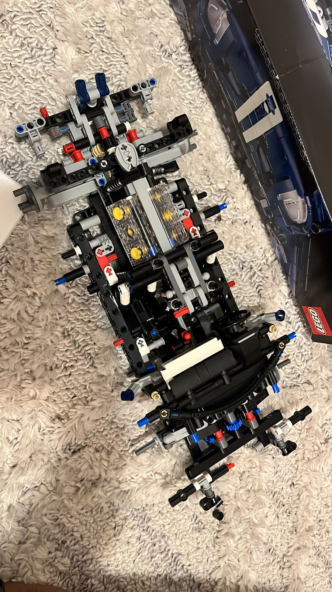
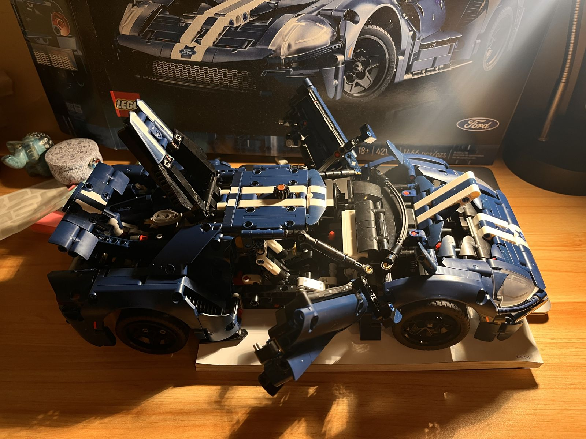
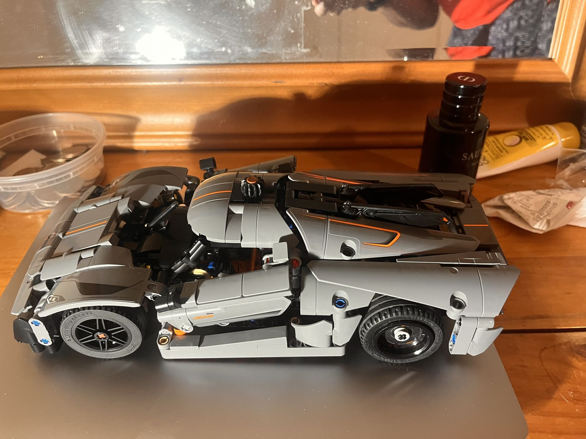
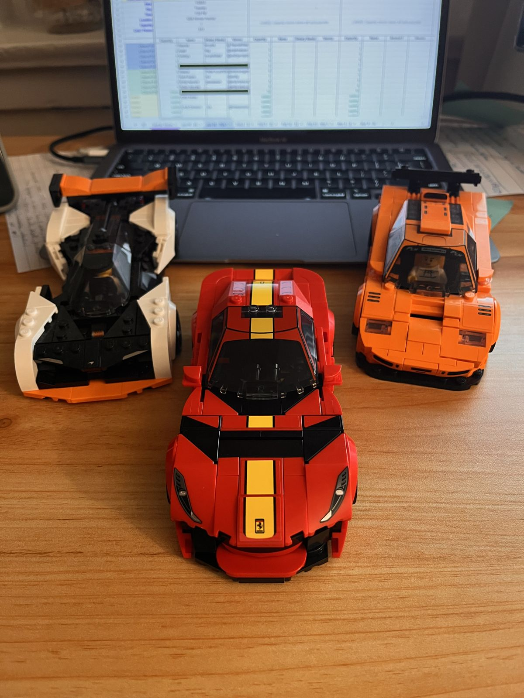
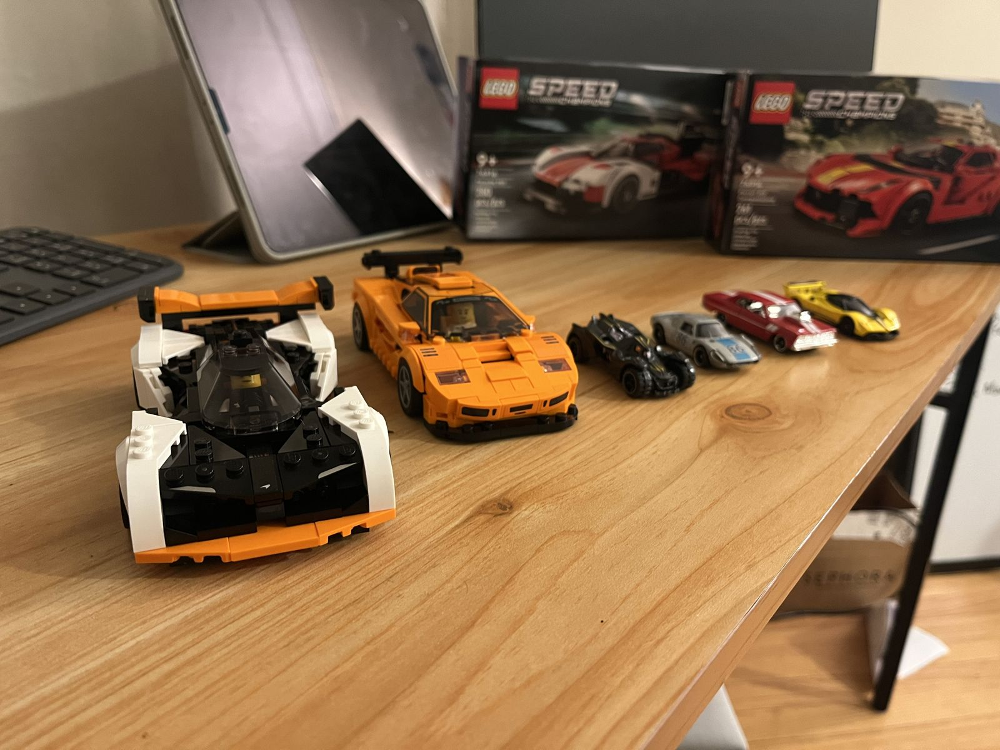

LEGO garage
Semi-professional LEGO builder
Technic sets are mechanical engineering you can hold: gear trains, differentials, suspension geometry. Building them is how I switch off, and it's still engineering.





